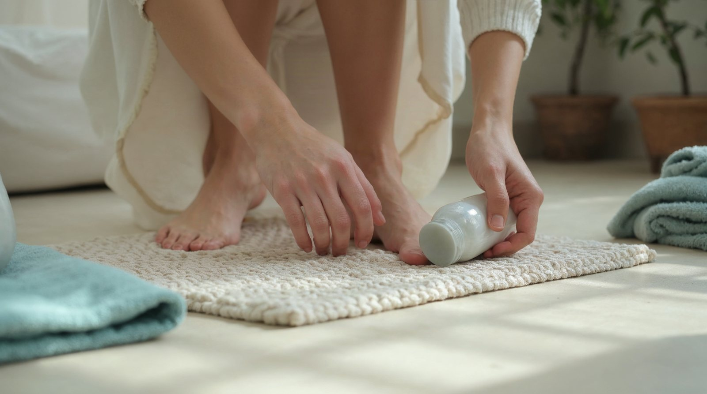
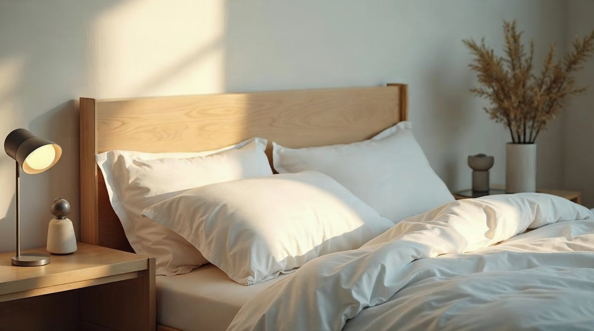
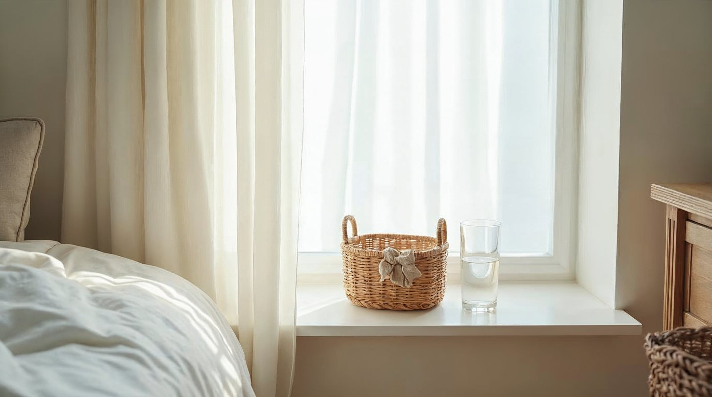

이종호 한의사 감수좋은꿈참사랑한의원 대표원장 (한의사 면허번호 19769)발행 2026-11-23 · 수정 2026-11-26
이 글의 차례
- 왜 이런 불편이 생길 수 있나요
- 왜 하필 잠들고 1~2시간 사이에 땀이 몰릴까요?
- 잠든 초반 땀과 밤새 이어지는 땀은 다른 얘기예요
- 비슷해 보여도 따로 살필 것들
- 우리 아이 밤땀, 이렇게 한번 체크해 보세요
- 한의학에서는 땀을 어떻게 나눠 보나요?
- 나이에 따라 조금씩 달라요
- 저녁 시간을 이렇게 바꿔 보셔도 좋아요
- 땀 때문에 깨는 걸까요, 깨서 땀이 보이는 걸까요?
- 코가 막혀 땀이 나는지 보려면
- 2주만 이렇게 지켜봐 주세요
- 낮 생활도 밤땀과 이어져 있어요
- 저녁 식사와 간식도 한번 봐 주세요
- 땀띠와 피부도 같이 챙겨 주세요
- 먼저 이렇게 여쭙니다
- 일상에서 먼저 해 볼 수 있는 것
- 집에서 해 주실 일은 딱 하나예요
- 한의원에서 함께 살필 수 있는 경우
- 처음 오시면 어떤 순서로 보나요?
- 이렇게 기록해 오시면 상담이 쉬워집니다
- 이런 증상은 먼저 확인이 필요합니다
아이가 잠들고 1~2시간 사이 땀을 흠뻑 흘리는 일은 아이들에게 흔하지만, 침실 온도와 이불, 잠자기 전 활동, 코골이를 먼저 확인하고 열이나 체중 변화가 있으면 소아청소년과 진료를 먼저 받습니다. 베개가 젖을 만큼 땀을 흘리는 모습을 보면 놀라시지만, 대부분은 잠든 초반에 땀이 많은 경우입니다.
진료실에서 보호자분들께 자주 듣는 말이 있어요. "원장님, 애가 자고 나면 베개가 축축해요. 어디 약한 건 아닐까요?" 그 마음 충분히 알아요. 밤에 머리를 쓰다듬었는데 손이 흠뻑 젖어 있으면 누구라도 놀라거든요.
그런데 먼저 안심하셔도 되는 경우가 많아요. 아이 몸은 원래 어른보다 열을 많이 만들고, 그 열을 땀으로 내보내는 일을 아주 부지런히 하거든요. 잠든 초반에 땀이 몰리는 건 그 일이 잘 돌아가고 있다는 뜻일 때가 많아요.
왜 이런 불편이 생길 수 있나요
- 아이는 어른보다 체온 조절이 활발해 깊이 잠드는 초반에 땀을 많이 흘릴 수 있습니다.
- 두꺼운 이불, 높은 실내 온도, 잠들기 직전의 활발한 놀이가 땀을 늘립니다.
- 코가 막혀 숨쉬기 힘들면 몸이 애쓰면서 땀이 나기도 합니다.
- 한의학에서는 아이 몸의 열 경향과 잠, 식사를 함께 살핍니다.
- 감기를 앓고 난 뒤 한동안 땀이 늘었다가 회복과 함께 줄어드는 아이도 있습니다.
왜 하필 잠들고 1~2시간 사이에 땀이 몰릴까요?
왜인 줄 아세요? 잠이 가장 깊어지는 때가 바로 잠든 직후 그 무렵이거든요. 몸은 깊은 잠으로 들어가려고 체온을 조금 내리는데, 열을 빼는 가장 쉬운 길이 땀이에요.
그래서 저녁에 뛰어놀아 몸이 데워진 날, 뜨거운 물에 오래 씻고 바로 누운 날, 자기 직전에 우유나 간식을 먹은 날에는 땀이 더 많아 보일 수 있어요. 몸이 내려야 할 열이 그만큼 많았던 거죠.
반대로 새벽으로 갈수록 땀이 잦아들고, 아침에 잘 일어나 밥도 잘 먹는다면 몸이 제 할 일을 하고 있다고 보셔도 되는 경우가 많아요.
비유를 하나 들면, 아이 몸은 작은 난로 같아요. 장작도 잘 타고 불도 금방 세게 올라오는데, 방이 좁고 이불까지 두껍게 덮으면 금방 더워지잖아요. 난로가 고장 난 게 아니라 방이 너무 따뜻한 경우가 많은 거예요.
잠든 초반 땀과 밤새 이어지는 땀은 다른 얘기예요
저는 아이 밤땀을 볼 때 두 가지로 나눠서 생각해요. 잠들고 1~2시간 사이 머리와 목 위주로 났다가 새벽엔 잦아드는 땀, 그리고 밤새 온몸이 젖고 낮에도 기운이 없는 땀이에요. 두 개가 다른 얘기거든요.
앞의 것은 깊은 잠에 들어가며 체온을 한 번 내리는 과정이라 아이들에게 흔해요. 이불과 방 온도만 맞춰도 줄어드는 경우가 많고요. 뒤의 것은 잠과 식사, 코, 최근 앓은 감기까지 넓게 살펴볼 필요가 있어요.
비슷해 보여도 따로 살필 것들
- 코막힘·코골이: 입을 벌리고 자고 코를 고는 아이는 숨 쉬는 데 힘이 들어 땀이 늘 수 있어요. 낮에도 입을 벌리고 있는지 같이 봐 주세요.
- 감기 뒤 땀: 열이 내린 뒤 한동안 땀이 많다가 입맛이 돌아오면서 줄어드는 아이가 있어요.
- 땀띠·가려움: 땀이 피부에 오래 머물면 목과 등에 땀띠가 생기고, 가려워서 더 자주 깨기도 해요.
- 잦은 뒤척임: 땀보다 뒤척임이 먼저 눈에 띈다면 잠드는 시간과 저녁 활동을 함께 살펴봐요.
- 저녁 식사: 늦게 배부르게 먹은 날은 소화하느라 몸이 더 데워져 땀이 늘었다고 느끼는 보호자분도 계세요.
우리 아이 밤땀, 이렇게 한번 체크해 보세요
- 땀이 주로 잠든 뒤 초반에 나고 새벽엔 줄어든다
- 머리, 이마, 목 뒤가 가장 많이 젖는다
- 아침에 깨우면 잘 일어나고 아침을 먹는다
- 낮에 잘 놀고 쉽게 지쳐 눕지 않는다
- 코골이나 입 벌리고 자는 모습은 거의 없다
위 항목에 대부분 해당하면 생활 환경부터 조정해 보셔도 괜찮아요. 해당하지 않는 항목이 여럿이라면 처음 오셨을 때 그 부분부터 같이 보면 돼요.
한의학에서는 땀을 어떻게 나눠 보나요?
한의학에서는 오래전부터 깨어 있을 때 나는 땀과 잠들어서 나는 땀을 나눠서 봤어요. 같은 땀이라도 언제, 어디에, 얼마나 나는지에 따라 몸이 보내는 신호가 다르다고 본 거죠.
그래서 저는 땀이 머리에만 나는지 손발까지 젖는지, 땀이 난 뒤 손발이 차가워지는지, 땀을 흘린 다음 날 기운이 처지는지를 꼭 여쭤요. 이런 것들이 모여야 아이 몸의 열 경향이 보이거든요.
예를 들어 땀이 많아도 아침에 쌩쌩하게 일어나는 아이와, 땀을 흘린 날마다 입맛이 떨어지고 낮에 자꾸 눕는 아이는 같은 밤땀이라도 살필 방향이 달라요. 이름만 같고 속은 다른 경우가 많은 거예요.
나이에 따라 조금씩 달라요
- 영유아: 머리가 몸에 비해 크고 열이 머리 쪽으로 많이 올라와, 잠든 초반 머리만 흠뻑 젖는 일이 흔해요. 이 시기엔 이불보다 방 온도와 옷 두께를 먼저 맞춰 주세요.
- 유치원 무렵: 낮 활동이 크게 늘어 저녁에 뛰어논 날과 조용히 보낸 날의 땀 차이가 뚜렷한 경우가 많아요.
- 초등학생: 학원과 숙제로 잠드는 시간이 늦어지고, 잠들기 직전 간식이 늘면서 땀이 많아졌다고 느끼는 보호자분이 계세요.
저녁 시간을 이렇게 바꿔 보셔도 좋아요
예를 들어 저녁을 늦게 먹고 바로 씻은 뒤 침대에서 장난을 치다 잠드는 경우라면, 순서만 살짝 바꿔도 달라질 수 있어요. 저녁을 조금 당기고, 씻은 뒤엔 불을 낮추고 책을 한 권 읽는 식이에요.
잠들기 직전 우유나 단 간식을 자주 찾는 아이라면 그 시간을 조금씩 앞으로 옮겨 주세요. 갑자기 끊으면 아이도 속상하니까, 최대한 천천히 바꾸는 게 오래가요.
땀을 흘린 뒤 갈아입힐 때는 아이를 완전히 깨우지 않도록 미리 마른 옷과 수건을 머리맡에 두세요. 젖은 등만 가볍게 닦고 갈아입혀도 다시 잠드는 데 도움이 되는 경우가 많아요.
땀 때문에 깨는 걸까요, 깨서 땀이 보이는 걸까요?
이것도 둘로 나눠 보면 좋아요. 더워서 이불을 차고 뒤척이다 깨는 아이가 있고, 다른 이유로 깼는데 마침 땀이 나 있어 보호자 눈에 띄는 아이가 있거든요.
앞의 경우는 온도와 이불을 맞추면 깨는 횟수가 함께 줄어드는 경우가 많아요. 뒤의 경우는 코막힘, 가려움, 화장실, 낮에 있었던 긴장 같은 다른 이유를 먼저 찾아봐야 해요.
그래서 기록하실 때 "깼다"만 적지 마시고 깼을 때 아이가 뭐라고 했는지, 화장실에 갔는지, 긁었는지도 한 줄 남겨 주세요. 그 한 줄이 진료실에서 아주 쓸모가 있거든요.
코가 막혀 땀이 나는지 보려면
- 잠든 아이 입이 벌어져 있고 숨소리가 크거나 고르지 않은지 봐 주세요.
- 아침에 일어나 목이 칼칼하다거나 입이 마른다고 하는지 물어봐 주세요.
- 감기가 아닌데도 코를 자주 훌쩍이거나 낮에도 입으로 숨 쉬는지 살펴봐 주세요.
- 겨울철 난방으로 방이 건조하면 코가 더 막히기 쉬워 습도도 함께 봐 주세요.
이런 모습이 자주 보이면 땀만 볼 게 아니라 코와 잠을 같이 살펴야 해요. 숨 쉬는 게 편해야 잠도 깊어지고, 몸이 애쓰는 땀도 덜 나는 경우가 많거든요.
2주만 이렇게 지켜봐 주세요
첫 주는 아무것도 바꾸지 말고 그대로 기록만 해 주세요. 잠든 시간, 땀이 난 시간, 이불과 방 온도 정도면 충분해요.
둘째 주에는 이불 한 겹 줄이기처럼 하나만 바꿔 보세요. 여러 개를 한꺼번에 바꾸면 뭐가 도움이 됐는지 알 수가 없거든요. 두 주를 나란히 놓고 보면 우리 아이에게 맞는 방이 어느 정도인지 감이 오실 거예요.
그래도 땀의 양이 비슷하고 아이가 자주 깨거나 낮에 지쳐 보인다면, 그 2주 기록을 들고 오세요. 기록이 있으면 처음부터 다시 묻지 않고 바로 아이 몸을 보는 데 집중할 수 있어요.
낮 생활도 밤땀과 이어져 있어요
낮에 물을 거의 안 마시고 저녁에 몰아서 마시는 아이가 있어요. 그러면 밤에 화장실 때문에 깨기도 하고, 몸의 수분 흐름이 고르지 않아요. 물은 낮 동안 나눠서 마시게 해 주세요.
바깥 활동도 운동하지 말라는 게 아니에요. 오히려 낮에 햇빛 보며 잘 뛰어노는 게 밤잠에 도움이 돼요. 다만 잠들기 직전의 격한 놀이만 저녁 일찍으로 옮겨 주시면 돼요.
저녁 식사와 간식도 한번 봐 주세요
밥을 먹고 나면 몸은 소화하느라 열을 더 만들어요. 그래서 저녁을 늦게, 배부르게 먹은 날은 잠든 뒤에도 몸이 한동안 데워져 있을 수 있어요. 저녁은 가능하면 잠들기 2~3시간 전에 마치는 쪽으로 조금씩 당겨 보세요.
기름진 야식이나 단 음료, 아이스크림을 자기 전에 자주 먹는 아이라면 그 횟수부터 줄여 보세요. 하루아침에 끊으라는 게 아니라, 일주일에 몇 번이던 걸 한두 번만 덜어 내는 거예요.
입이 짧아 저녁을 거의 안 먹고 자기 전에 배고프다고 하는 아이도 있어요. 이런 아이는 땀과 함께 식사 리듬을 같이 살펴야 해서, 하루에 언제 무엇을 먹는지 적어 오시면 많이 도움이 돼요.
땀띠와 피부도 같이 챙겨 주세요
땀이 많은 아이는 목 뒤, 겨드랑이, 팔다리 접히는 곳에 땀띠나 붉은 기가 잘 올라와요. 가려우면 자다가 긁느라 더 자주 깨고, 그러면 또 몸이 데워지는 일이 반복되기도 해요.
아침에 미지근한 물로 땀을 가볍게 헹구고 잘 말려 주세요. 피부가 접히는 곳은 물기가 남지 않게 톡톡 두드려 말리는 게 좋아요. 긁은 자국이 많다면 그 사진도 함께 보여 주세요.
먼저 이렇게 여쭙니다
- 땀은 잠들고 얼마 뒤에 많이 나나요?
- 침실 온도와 이불 두께는 어떤가요?
- 코를 골거나 입을 벌리고 자나요?
- 낮에 잘 먹고 잘 노나요?
- 땀이 머리와 목에만 나나요, 온몸에 나나요?
- 잠들기 직전에 우유나 간식을 먹나요?

일상에서 먼저 해 볼 수 있는 것
- 침실 온도를 20~22도 정도로 맞추기
- 두꺼운 이불 대신 얇은 이불 여러 장 쓰기(돌 전 아기는 이불 대신 수면조끼)
- 잠들기 전 1시간은 뛰어노는 놀이 줄이기
- 땀을 흘리면 마른 옷으로 갈아입히기
- 잠옷은 땀을 잘 흡수하는 면 소재로 입히기
- 땀에 젖은 베개 커버는 아침에 바로 갈거나 말리기
어른 기준으로 덮어 주면 아이에게는 대개 한 겹이 더 많은 경우가 많아요. 보호자분이 조금 서늘하다고 느끼는 방이 아이에겐 딱 맞을 수 있거든요.
씻는 물도 너무 뜨겁지 않게, 미지근하게 해 주세요. 뜨거운 물로 오래 씻고 바로 이불 속에 들어가면 몸에 남은 열을 빼느라 땀이 더 날 수 있어요.
집에서 해 주실 일은 딱 하나예요
위에 여러 가지를 적었지만 다 하시려면 힘들어요. 그래서 저는 하나만 부탁드려요. 잠든 아이 등에 손을 넣어 봤을 때 땀이 축축하면 이불을 한 겹 걷어 주세요.
이것만 해 주시고 나머지는 편하게, 하던 대로 하셔도 돼요. 아이 몸 전체를 살피는 건 제가 맡을게요. 보호자분이 하나라도 꾸준히 해 주시면 그걸로 충분히 큰 도움이 되거든요.

한의원에서 함께 살필 수 있는 경우
- 땀이 많고 잠을 자주 깨는 아이의 경우 잠과 몸의 열 경향을 함께 살핍니다.
- 입이 짧고 쉽게 지치는 경우 식사와 활동을 함께 살핍니다.
- 코막힘이나 코골이가 있는 경우 코와 잠을 함께 살핍니다.
좋은꿈참사랑한의원에서는 아이의 맥을 먼저 짚고, 아이가 자는 모습과 하루 생활을 보호자에게 자세히 들은 뒤 필요하다고 판단될 때 복진 같은 방법을 더해 아이의 몸 상태를 살핀 뒤 아이의 나이와 상태에 맞는 방법을 함께 정합니다. 귀가 전에는 집에서 지켜볼 점을 알려 드립니다.
처음 오시면 어떤 순서로 보나요?
처음 오시면 저는 아이 맥부터 짚어요. 모든 분께 그렇게 하거든요. 보호자분과 함께 들어오시면 되고, 낯선 곳이라 아이가 긴장하면 잠깐 이야기를 나누며 편해진 다음에 짚어요.
그다음 보호자분께 아이가 자는 모습을 자세히 여쭤요. 몇 시에 눕는지, 땀이 언제 시작되는지, 이불은 무엇을 덮는지 같은 거예요. 말을 할 수 있는 나이면 아이에게도 "자다가 더워서 깨?" 하고 직접 물어봐요.
그러니까 사실은 땀 하나만 보는 게 아니에요. 잘 먹는지, 변은 잘 보는지, 낮에 잘 노는지, 코는 괜찮은지까지 같이 봐야 땀이 어디서 오는지 보이거든요. 땀만 멈추려는 게 아니라 아이 몸 전체가 잘 돌아가게 하려는 거예요.
한약은 땀만 보고 정하지 않아요. 아이 상태를 충분히 본 뒤 필요하다고 판단될 때 상담하고, 지금 먹고 있는 약이나 영양제가 있으면 먼저 확인해요. 먹는 중에 아이가 불편해 보이면 복용을 멈추고 연락 주세요.
다시 오시면 지난번 이야기부터 이어서 여쭤요. 땀이 언제 줄었는지, 이불을 바꾼 뒤 어땠는지, 아이 입맛과 기운은 어떤지를 하나씩 비교하면서 다음에 무엇을 할지 같이 정하는 거예요. 보통은 한 달 정도 지켜보고 다시 판단해요.

이렇게 기록해 오시면 상담이 쉬워집니다
- 잠든 시간과 땀이 많이 난 시간
- 침실 온도와 이불, 잠옷 두께
- 코골이나 입 벌리고 자는 모습(영상도 괜찮습니다)
- 최근 몸무게와 열이 난 적이 있는지
- 땀을 흘린 다음 날 아이의 컨디션과 입맛
꼼꼼한 일지가 아니어도 괜찮아요. 휴대폰 메모에 '밤 10시 취침, 11시 머리 흠뻑, 두꺼운 이불' 정도만 일주일 남겨 주셔도 흐름이 보이거든요.
젖은 베개 사진도 도움이 돼요. 얼마나 젖는지 진료실에서 같이 보면 이야기가 훨씬 빨라져요. 잠든 아이를 깨우지 않는 선에서만 찍어 주세요.
아이 밤땀은 보호자분이 가장 먼저, 가장 가까이에서 보시는 거예요. 궁금한 건 편하게 물어보세요. 오시면 아이 자는 이야기부터 천천히 같이 들어 볼게요.
이런 증상은 먼저 확인이 필요합니다
- 열이 함께 나거나 몸무게가 줄어드는 경우
- 자다가 숨을 멈추는 모습이 보이는 경우
이런 신호가 있으면 한의원보다 가까운 병원이나 응급실을 먼저 찾으세요.

여쭙는 것
- 땀은 잠들고 얼마 뒤에 많이 나나요?
- 침실 온도와 이불 두께는 어떤가요?
- 코를 골거나 입을 벌리고 자나요?
생활에서 해 볼 것
- 침실 온도를 20~22도 정도로 맞추기
- 두꺼운 이불 대신 얇은 이불 여러 장 쓰기(돌 전 아기는 이불 대신 수면조끼)
- 잠들기 전 1시간은 뛰어노는 놀이 줄이기
한의원에서 함께 살필 것
- 땀이 많고 잠을 자주 깨는 아이의 경우 잠과 몸의 열 경향을 함께 살핍니다.
- 입이 짧고 쉽게 지치는 경우 식사와 활동을 함께 살핍니다.
- 코막힘이나 코골이가 있는 경우 코와 잠을 함께 살핍니다.
먼저 확인이 필요한 신호
- 열이 함께 나거나 몸무게가 줄어드는 경우
- 자다가 숨을 멈추는 모습이 보이는 경우
한눈에 보는 표
| 구분 | 핵심 |
|---|---|
| 여쭙는 것 | 땀은 잠들고 얼마 뒤에 많이 나나요? 침실 온도와 이불 두께는 어떤가요? |
| 생활에서 해 볼 것 | 침실 온도를 20~22도 정도로 맞추기 두꺼운 이불 대신 얇은 이불 여러 장 쓰기(돌 전 아기는 이불 대신 수면조끼) |
| 한의원에서 함께 살필 것 | 땀이 많고 잠을 자주 깨는 아이의 경우 잠과 몸의 열 경향을 함께 살핍니다. 입이 짧고 쉽게 지치는 경우 식사와 활동을 함께 살핍니다. |
| 먼저 확인이 필요한 신호 | 열이 함께 나거나 몸무게가 줄어드는 경우 자다가 숨을 멈추는 모습이 보이는 경우 |
자주 묻는 질문
땀을 많이 흘리면 몸이 약한 건가요?
아이들은 어른보다 땀이 많은 편입니다. 잘 먹고 잘 놀면 크게 걱정하지 않으셔도 되는 경우가 많습니다.
땀 흘린 뒤 물을 먹여야 하나요?
깨어 있을 때 물을 충분히 마시게 하면 됩니다.
땀띠도 같이 생기는데 어떻게 하나요?
땀을 흘린 뒤 마른 옷으로 갈아입히고, 씻을 때 미지근한 물로 헹궈 잘 말려 주세요.
땀이 많으면 보약을 먹여야 하나요?
땀만으로 한약을 정하지 않습니다. 잠과 식사, 활동을 함께 살핀 뒤 필요할 때 상담합니다.
여름에만 그런데 괜찮나요?
계절에 따라 땀이 늘었다 줄었다 하는 건 흔해요. 서늘한 계절에도 같은 양이 이어지거나 낮에 기운이 없으면 함께 살펴봐요.
좋은꿈참사랑한의원은 재진 때 지난번 이야기부터 이어서 여쭙니다. 진료시간과 예약은 오시는 길에서 확인하세요.
어디서 상담받을 수 있나요?
좋은꿈참사랑한의원은 서울 동작구 만양로2길 2 신성빌딩 3층·5층(서울 동작구 상도동, 7호선 상도역 3번 출구 근처)에 있습니다. 한의사 3명(이종호 대표원장, 조영기 수석진료원장, 정원영 진료원장)이 진료합니다. 진료시간은 평일 09:30~20:00(점심 13:00~14:00), 토·일·공휴일 09:30~15:00이며, 방문 전 전화로 확인을 권합니다. 예약은 네이버 예약, 카카오톡 상담, 전화 02-815-7510로 받습니다.
이 글은 일반적인 건강 정보이며 개인의 진단이나 치료를 대신하지 않습니다. 증상이 있거나 복용 중인 약이 있다면 진료를 통해 확인하세요. 치료 효과는 개인마다 다를 수 있습니다.
작성 기준: 일반적으로 알려져 있는 건강 정보를 참고해 정리했습니다(대표원장 감수). 증상 기록은 1~2주 동안 하루 1회, 비슷한 시간에 적어 오시면 지난 상태와 비교하기 쉽습니다.